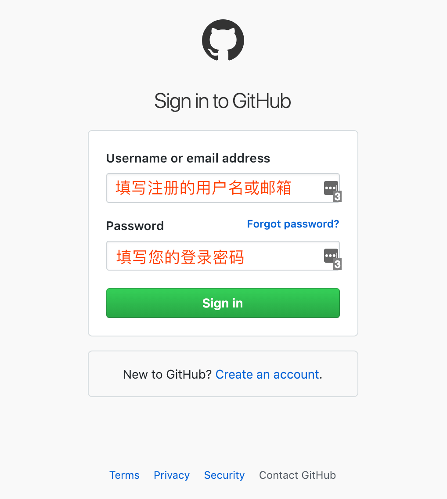
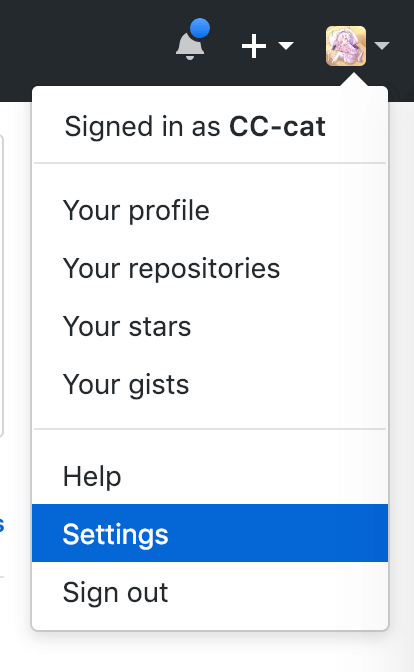
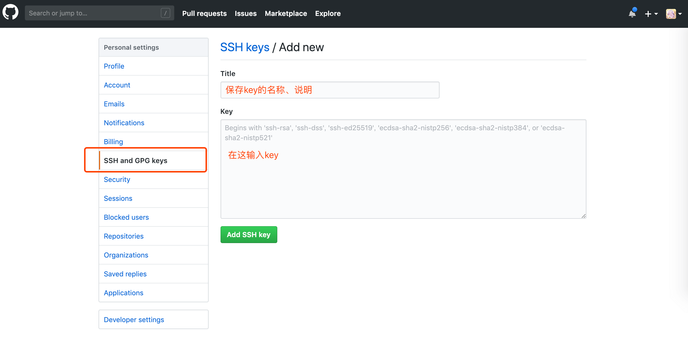
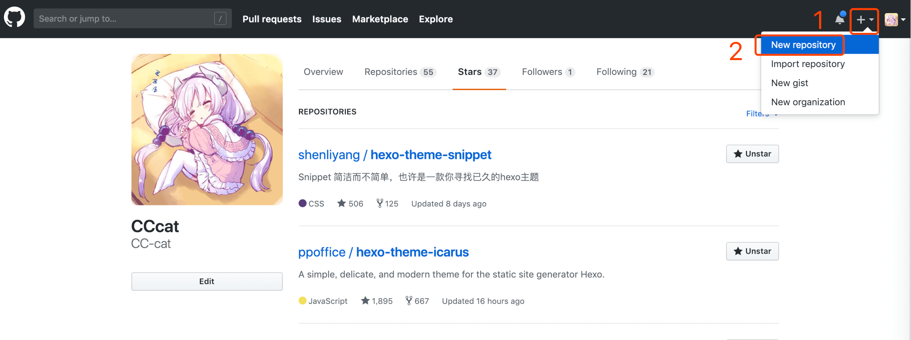
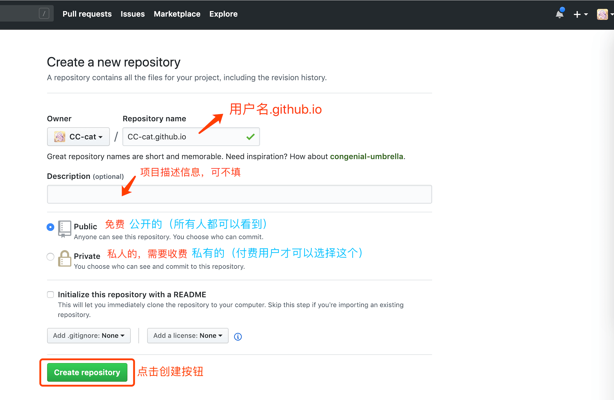
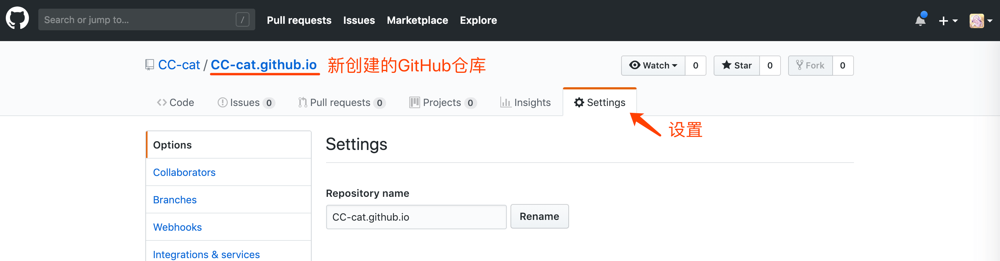
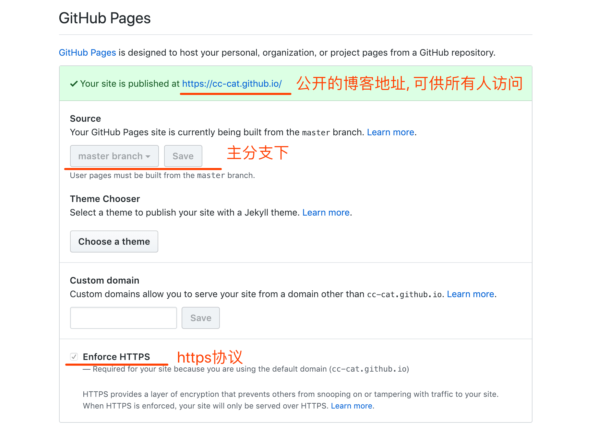
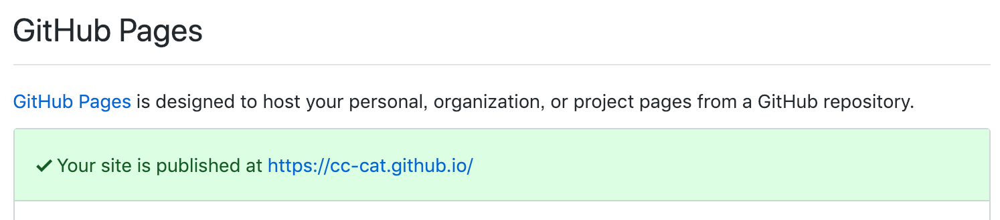

（二）教你使用Hexo-Github-Pages搭建个人独立博客

# 注册 GitHub
老手和已注册过的用户略过，直接进行下一步
1.打开 GitHub 官网
GitHub 官网:https://github.com/
2.填写注册信息进行注册操作
没有登录的用户打开网站首页就会显示注册的操作（如下图所示），或者是点击Sign up按钮进入注册详情页。
3.注册信息
填写好注册信息，点击Sign up for GitHub(注册)按钮，接下来是选择协议部分。根据自己的情况选择相关的协议，一般人选的都是免费的那一项。
# 登录 Github
在 github 首页点击 Sign in 按钮进入登录页面。填写用户名或邮箱和密码，点击Sign in按钮登录。

# 配置 SSH
老手和已注册过的用户略过
#windows 系统（mac 系统直接走第 4 步）
1.下载Git Bash
Git Bash官网地址：https://git-scm.com/
2.打开Git Bash终端
在桌面右键，会出现 Git Bash here 的选项，点击即可。
3.设置user name和email
1 | $ git config --global user.name "你的GitHub用户名" |
4.生成ssh密钥
1 | $ ssh-keygen -t rsa -C "你的GitHub注册邮箱" |
一般情况下是不需要密码的，所以，接下来直接回车就好。
此时，在用户文件夹下就会有一个新的文件夹.ssh，里面有刚刚创建的 ssh 密钥文件id_rsa和id_rsa.pub。
注：id_rsa文件是私钥，要妥善保管，id_rsa.pub是公钥文件。
5.添加公钥到 github
点击用户头像，然后点击显示的
Settings(设置)选项。
在用户设置栏，点击
SSH and GPG keys选项，然后点击New SSH key(新建 SSH)按钮。将
id_rsa.pub中的内容复制到Key文本框中，然后点击Add SSH key(添加 SSH)按钮。

6.测试 SSH
1 | $ ssh -T git@github.com |
- 接下来会出来下面的确认信息
The authenticity of host 'github.com (207.97.227.239)' can't be established.
RSA key fingerprint is 17:24:ac:a5:76:28:24:36:62:1b:36:4d:eb:df:a6:45.
Are you sure you want to continue connecting (yes/no)?输入 yes ，然后回车。
显示如下信息则配置 SSH 成功！其中的CC-cat是用户名。
Hi CC-cat! You've successfully authenticated, but GitHub does not provide shell access.# 创建 GitHub 仓库
1.点击创建仓库
点击在登录的用户图像左边的+号和下三角符号按钮。

2.填写创建仓库信息
仓库名称必须是用户名.github.io（具体看 GitHubPages 创建规则），比如我的用户名是CCcat，就是CCcat.github.io。

3.填写相关信息
填写好相关信息，点击Create repository（创建仓库）按钮。
# 上传本地项目到 GitHub
以下两种方法二选一
1.通过终端命令行上传（具体方法请自行Google）
2.通过 Sourcetree 软件辅助上传
# 创建 GitHub Pages
找到GitHub远端博客项目下，Settings选项下往下找，有一个 GitHub Pages ，按照截图内容配置。


- 配置完正常显示如下

按照截图配置成功后，此时就可以初始化 git 本地仓库，部署 Hexo 了。
部署 Hexo，请看 手把手教你使用 Hexo-Github-Pages 搭建个人独立博客（三）
# 结语
第一步，我们搭建了本地的 Hexo 博客，并通过
http://localhost:4000访问了它。
手把手教你使用 Hexo-Github-Pages 搭建个人独立博客（一）
第二步，我们要将博客上传到 GitHub，并通过Github-Pages配置在网页上提供访问。详情请看文章：
手把手教你使用 Hexo-Github-Pages 搭建个人独立博客（二）
第三步，部署 Hexo，将 hexo 生成的静态内容部署到配置的仓库中，详情请看文章：
手把手教你使用 Hexo-Github-Pages 搭建个人独立博客（三）